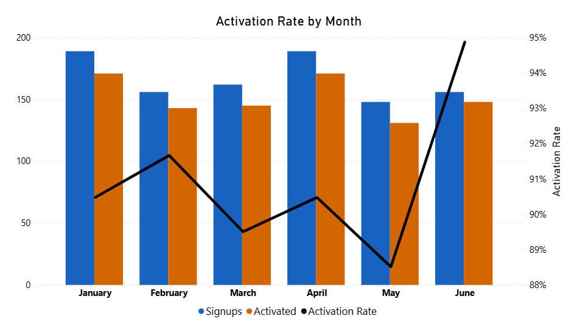

Activation Rate
Description
Activation Rate measures the percentage of newly registered users who complete a defined "activation" action within a chosen time window (e.g., 7 days). This action should represent a user reaching first value - such as first login, app install and login, email verification, or the first time they perform your core value action.
Recommended category: Customer (Acquisition & Onboarding).
Visual Example

DAX Formula
The measures below define an ActivationDate as the earliest of several milestone dates, then compute the portion of signups in a period that activated within Activation Window (Days) (default 7).
Notes: If you prefer a single canonical activation event (e.g., first login), replace the ActivationDate logic with that event's date only. You can also make the window a slicer parameter (7/14/28 days) via a disconnected table.
SQL Example
This SQL computes the earliest milestone per user, then calculates the activation status for signups in each month using a 7-day window.
Usage Notes
- Define "activation" precisely (first value moment). Avoid using vanity milestones that don't correlate with retention or revenue.
- Choose a window (commonly 7 days; sometimes 1, 14, or 28) that reflects your product's typical time-to-value.
- Segment by acquisition channel, device, cohort, or region to find optimization opportunities.
- Pair with Retention Curve to ensure activated users remain active over time.
- Quality check: verify that milestone timestamps are in the same timezone and free of backfills that could bias the window logic.